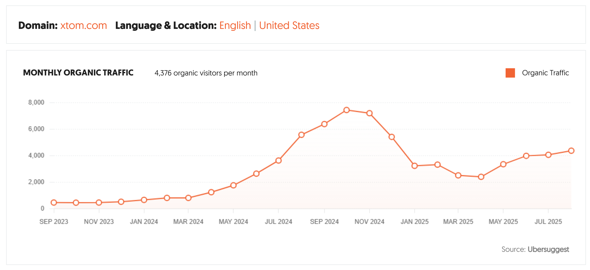
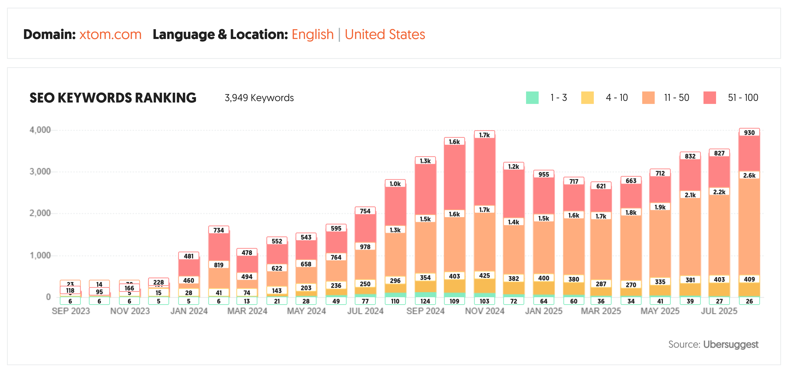

Objective & Challenges
xTom, an Infrastructure as a Service (IaaS) provider, needed to increase its organic footprint in the highly competitive cloud hosting and virtualization market. With a low traffic baseline of ~300 monthly visitors, the primary challenge was to create content that could outrank established competitors and attract a sophisticated technical audience.
The key objectives were to:
- Significantly increase qualified organic traffic from developers and system administrators.
- Establish xTom as a thought leader and trusted technical resource.
- Drive top-of-funnel awareness that would convert to leads for their IaaS services.
Strategy & Execution
The strategy was centered on creating a comprehensive library of in-depth, practical technical guides. Instead of targeting broad, high-level keywords, the focus was on long-tail, problem-oriented search queries that indicated a user was actively trying to solve a specific technical challenge.
Pillar Content Creation
Over 90 articles were produced, covering five core content pillars relevant to xTom's services. Each article was engineered to be a definitive resource on its topic, including step-by-step instructions, code snippets, and clear explanations of complex concepts. Key pillars included:
- Linux & System Administration: Guides on server management, command-line tools, and OS configuration.
- Web Hosting & Servers: Tutorials for NGINX, Apache, SSL, and DNS management.
- Security & Privacy: Best practices for firewalls, VPNs, and SSH hardening.
- Containerization & DevOps: Content focused on Docker, Docker Compose, and modern deployment workflows.
- Self-Hosting Solutions: Step-by-step guides for deploying popular open-source applications.
This approach ensured that the content not only ranked well on search engines but also provided genuine utility, building trust and brand equity with every article view.
Results & Impact
Over a 14-month period, the content and SEO strategy delivered transformative results. Monthly organic traffic grew from a baseline of ~300 visitors to a peak of over 7,500—a 2300% increase that turned the blog into a significant driver of brand awareness.

This traffic growth was fueled by a massive expansion in keyword rankings. The site went from having almost no visibility to securing over 450 keywords in the top 10 search results, including more than 100 in the coveted top 3 positions at its peak.

The impact extended beyond simple traffic metrics:
- Market Authority: The content library established xTom as a credible and authoritative voice in the IaaS space, frequently outranking much larger competitors for technical keywords.
- Qualified Lead Generation: The highly specific, problem-solving nature of the content attracted a qualified audience of developers and IT professionals actively seeking infrastructure solutions.
- Sustainable Growth Engine: The broad keyword footprint created a durable source of organic traffic, continuing to deliver over 4,300 monthly visitors long after the peak.
Content Highlights
Below are a few examples of the top-performing articles that drove these results, demonstrating the strategy in action.
How to Install Docker and Docker Compose on Debian 12
Learn how to set up Docker and Docker Compose on Debian 12 with step-by-step instructions.
Read Article →The 10 Best Linux Desktop Environments (2024 Update)
Discover the best Linux desktop environments for 2024, including performance and customization options.
Read Article →Rocket.Chat vs. Mattermost - What's the Best Self-Hosted Solution?
A detailed comparison of Rocket.Chat and Mattermost to find the best self-hosted chat solution.
Read Article →The 15 Best Self-Hosted Photo Management Apps
Explore the top self-hosted photo management apps as alternatives to Google Photos.
Read Article →What Are Symlinks in Linux and How Do You Create Them?
Understand Linux symlinks, their use cases, and how to create them with examples.
Read Article →How To Install NoMachine on Linux for the Perfect Remote Desktop Experience
A guide to installing NoMachine for a smooth and efficient remote desktop experience on Linux.
Read Article →What Is GNU and How Does It Relate to Open-Source Software?
Learn about GNU and its significance in the open-source software movement and Linux.
Read Article →The 7 Best Linux Firewalls as of 2025
Discover the top Linux firewalls for securing your system in 2025, with pros and cons for each.
Read Article →Comparing the Top 6 Self-Hosted Note-Taking Apps
Compare the best self-hosted note-taking apps for privacy-conscious users.
Read Article →How to Automatically Update Docker Containers with Watchtower
A step-by-step guide to using Watchtower for automatically updating Docker containers.
Read Article →